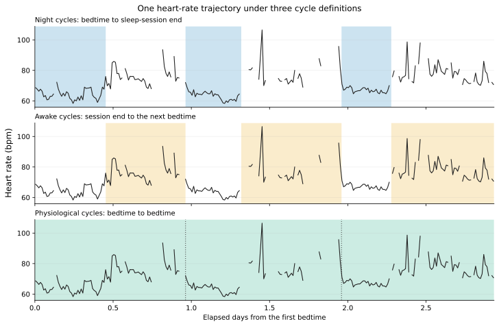

Sleep-anchored cycles
Calendar days are not always the most useful unit for wearable data. A sleep session commonly crosses midnight, and the waking interval that follows it belongs naturally to the same sleep-wake sequence. pywearable therefore provides three participant-local cycle definitions.


cycle_nightThe provider-designated main-sleep session, from bedtime to session end.
cycle_awakeThe interval from the end of one main sleep to the following main sleep’s bedtime.
cycle_physiologicalThe interval from one main sleep’s bedtime to the following main sleep’s bedtime. It contains both the night and the waking interval that follows.
Naps remain observations within the awake and physiological cycles; they do not create new boundaries.
Define cycle boundaries
Use pywearable.cycle.get_intervals() to define and inspect the exact
intervals:
from pywearable import cycle
intervals = cycle.get_intervals(
loader,
cycle_type=cycle.CYCLE_PHYSIOLOGICAL,
user_id="participant-01",
start_date="2026-01-01",
end_date="2026-01-08",
)
The result contains start_time, end_time, interval_valid, and
end_source for each requested sleep calendar date. Feature functions use
this same interval calculation internally when resolution is set to a
cycle. Calling it directly is useful when the boundaries themselves need to
be inspected or reused.
Use cycles in feature extraction
Cycle names can be passed wherever the domain supports cycle aggregation:
from pywearable import heart_rate
awake_hr = heart_rate.get_heart_rate_statistics(
loader,
statistic=heart_rate.HEART_RATE_STATISTIC_MEAN,
user_id="participant-01",
start_date="2026-01-01",
end_date="2026-02-01",
resolution=cycle.CYCLE_AWAKE,
)
They can also form the first meaningful parent in a hierarchy. For example,
("5min", "cycle_night", "monthly") validates five-minute windows,
summarizes each night, and then aggregates nights by month.
Missing boundaries
An awake or physiological cycle needs the following night’s bedtime. When
that boundary is unavailable, the cycle is invalid by default. Set
missing_end="midnight" through cycle_kwargs only when the analysis
protocol defines the next local midnight as an acceptable endpoint. A missing
starting boundary is never inferred.
Date labels and physical intervals
Cycle rows are indexed by sleep calendar date. Date bounds select those row labels, while the returned start and end timestamps preserve the complete interval. Thus a night assigned to January 1 can include its bedtime on December 31.